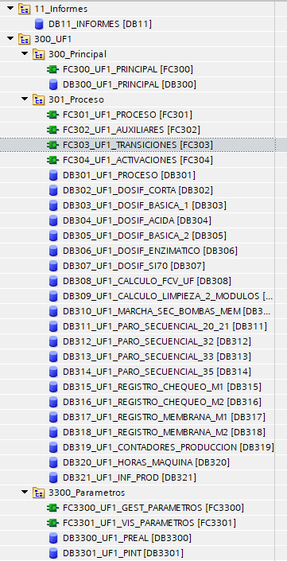
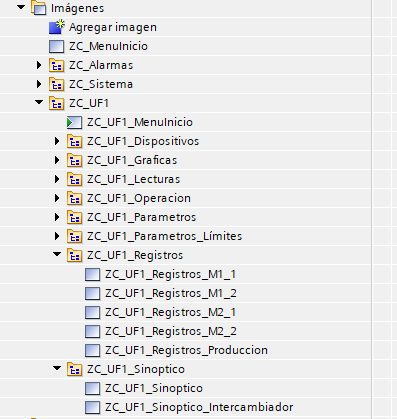
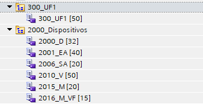

Convenciones de Codificación y Nomenclatura
Este manual incorpora estándares estrictos de nomenclatura y comentarios para garantizar la consistencia y legibilidad del código.
Nombre de proyectos
La regla para nombrar los bloques es la siguiente:
- Numero de proyecto + _ + Planta + _ + Maquina + _ + Año(XX) + mes(XX) + día(XX)
- 23147_TradicionCasera_Planta_251113
- 25077_RenyPicot_UF_251113
Nomenclatura de bloques (OB/FC/FB/DB)
La regla para nombrar los bloques es la siguiente:
- Tipo de bloque + Número + _ + Nombre en MAYÚSCULAS.
- OB1_MAIN
- FC1_SISTEMA
- DB6_ENTIDAD
Para los bloques de controles (que serán reutilizables), la regla es la siguiente:
- Tipo de bloque + _ + ZC + _ + Número + _ + Nombre en MAYÚSCULAS.
- FB15050_ZC_CHEQUEO
En el caso de OB de interrupción cíclica, también se pondrá el tiempo configurado de interrupción:
- Tipo de bloque + Número + _ + Nombre en MAYÚSCULAS + _ + Tiempo de interrupción.
- OB30_PID_100MS
Organización de carpetas
La regla para organizar las carpetas serán la siguiente:
- NUNCA se utilizarán más de dos niveles.
- PLC
- Las carpetas de sistema siempre empezaran por “0_”
- Regla de nombre: Numero de bloque que contiene (si hay más de uno, el número más bajo) + _ + Descripción (PascalCase)

- HMI
- Regla de nombre: ZC + _ + Maquina + _ + Descripción (PascalCase)

Tablas de variables generales
La regla para organizar las carpetas será idéntica al punto anterior.
La regla para nombrar las tablas de variables será la siguiente:
- Número de bloque + _ + Nombre en MAYÚSCULAS.

Variables internas de bloques
Se intentará que el nombre de la variable no exceda los 15 caracteres.
Los comentarios son obligatorios para todas las variables, explicando su uso.
Omitir caracteres especiales, así como signos, tildes y la letra Ñ.
Las reglas para nombrar las variables internas de los bloques OB, FC y FB son las siguientes:
- Parámetros In/Out/InOut
- Seguir la norma PascalCase
- EstadoMarcha
- SetPointTemp
- Seguir la norma PascalCase
- Parámetros estáticos
- Prefijo s_ seguido de PascalCase
- s_TiempoEtapa
- s_EtapaActual
- Prefijo s_ seguido de PascalCase
- Parámetros temporales
- Prefijo t_ seguido de PascalCase
- t_TiempoEtapa
- t_EtapaActual
- Prefijo t_ seguido de PascalCase
- Variables para bucles FOR
- Nombres fijos para los bucles.
- for_i
- for_j
- for_k
- Nombres fijos para los bucles.
- Constantes
- MAYÚSCULAS con palabras separadas por barra baja (_).
- ETAPA_0_REPOSO
- MAYÚSCULAS con palabras separadas por barra baja (_).
Variables de DB
Se intentará que el nombre de la variable no exceda los 15 caracteres.
Los comentarios son obligatorios. En el caso de grupos de variables dentro de un Struct, comentario principal de la estructura debe dejarse en blanco. Solo se comentan las variables internas, incluyendo el nombre de la estructura en el inicio del comentario para claridad.
- Ejemplo:
- Estado.Marcha // Estado en marcha
Evitar siempre la creación de arrays de tipos de datos (Array[0..N] OF Bool/Int/Real) para marcas auxiliares, en su defecto usar una estructura con el nombre “Aux” y dentro de ella declarar las variables de una en una. De esta forma, se puede escribir el nombre de la variable para su mejor comprensión en el programa, en vez de usar la variable del array. Por ejemplo:
- DB300_UF1_PROCESO.Aux.ChequeoListo
- Buena comprensión del uso de la variable
- DB300_UF1_PROCESO.Aux.Bool[2]
- Dependencia únicamente del comentario de la variable, mala comprensión en programa.
Se intentará agrupar siempre los tipos de datos en las estructuras:
- Datos booleanos
- Datos enteros
- Datos reales
Siempre se intentará dejar variables de reserva para futuras ampliaciones. Estas variables deben seguir el siguiente formato de nombre:
- R_TipoDeDato_Numero
- R_Bool_3
- R_Int_1
- R_Real_2
Las variables internas de una estructura no deben repetir el nombre de la estructura que las contiene, ya que la estructura completa ya implica ese contexto.
Comentarios en Código SCL y KOP
Comentario Principal (en código SCL):
- Se usa una línea separadora para el título del bloque/segmento. Siempre utilizando un espaciado de tabulación entre el inicio del comentario a la barra separadora o descripción.
// ===================================================================
// COMENTARIO PRINCIPAL
IF ...... THEN
………
END_IF;
- Comentario Puntual: No se utiliza línea separadora.
// Comentario puntual
IF ...... THEN
………
END_IF;
Comentario de Segmento (KOP/FUP): Se usa la línea separadora al inicio del segmento (15 símbolos de igualación + espacio + Descripción). Se intentará siempre dejar este segmento vacío, y comenzar con el código que corresponde al titulo en el segmento siguiente.
- =============== Titulo del segmento
Espaciado de código en SLC
En el código en SCL, se mantendrá una coherencia en el espaciado del código para su mejor comprensión.
- Dejar siempre una línea en blanco al inicio y al final del código, al inicio y al final de las regiones, al inicio y al final de instrucciones (IF, FOR, CASE, etc.).
- Dejar dos espacios entre REGIONES.
- Si una asignación directa a una variable tiene muchas condiciones, se organizará de la siguiente manera:
- MAL:
- Variable := Condición 1 AND (Condición 2 OR Condición 3) AND Condición 4 AND Condición 5 AND Condición 6 AND Condición 7;
- BIEN:
- Variable :=
- MAL:
Condición 1
AND
(Condición 2 OR Condición 3)
AND
Condición 4
AND
Condición 5
AND Condición 6
AND
Condición 7;